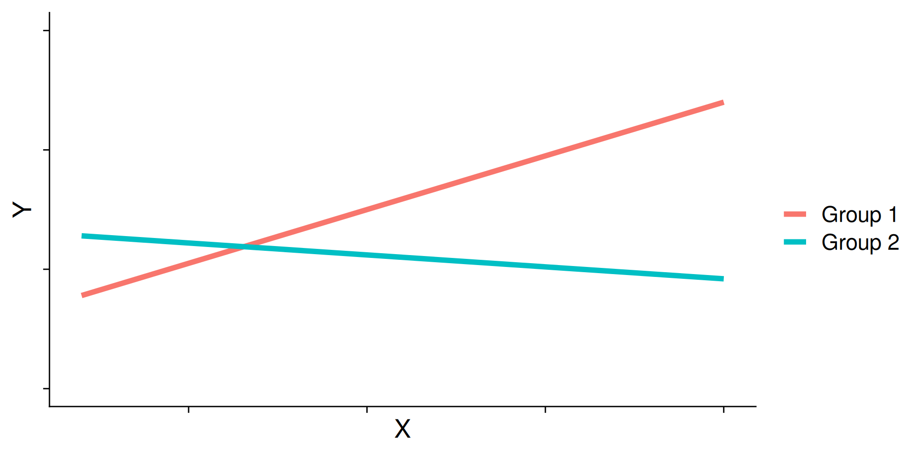
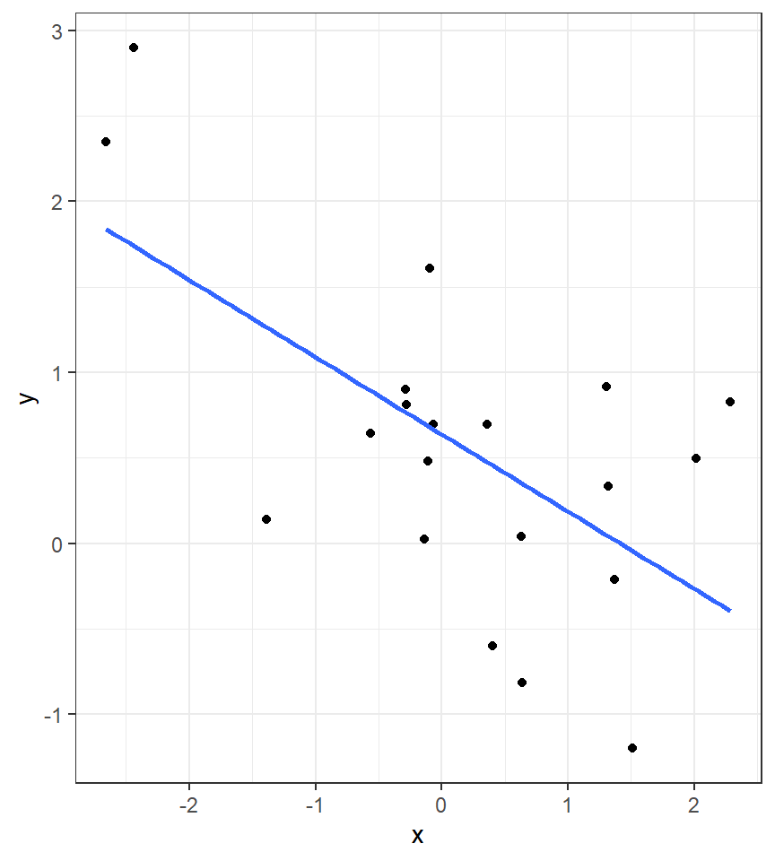
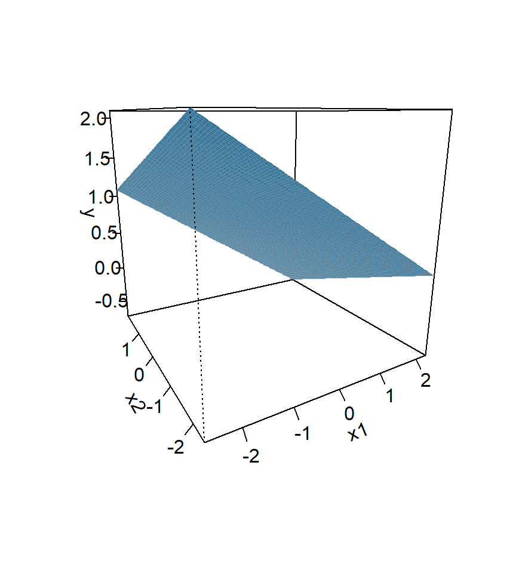
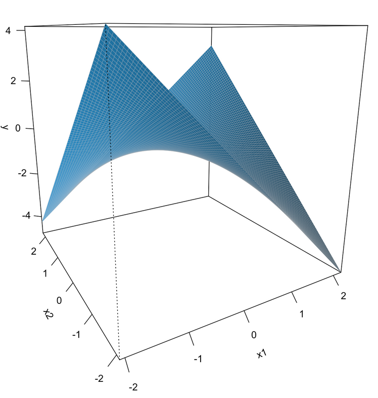
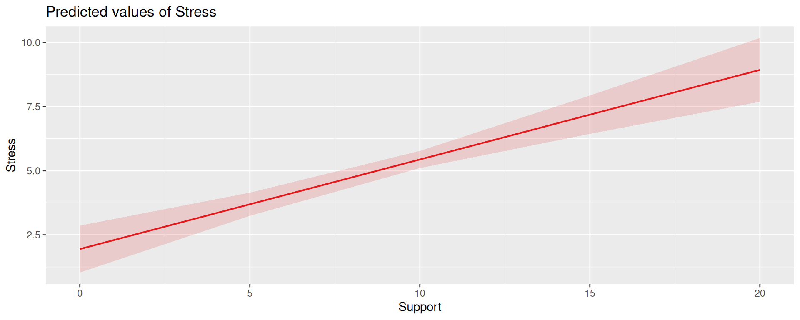

library(tidyverse)
library(rio)
library(here)
library(lm.beta)
library(easystats) #https://easystats.github.io/modelbased/articles/introduction_comparisons_3.html?q=simple%20slo#contrasts-and-comparisons-for-slopes-of-numeric-predictors
library(sjPlot)
#Remove Scientific Notation
options(scipen=999)
#Import Example Data
t_data <- import(here("files", "data", "tutor.csv"))Week 13: Intro to Moderation
Date: November 17, 2025
Today…
Checking back in on Regression
Making things complicated with moderation
Final Project Check in
Motivating example
Rows: 20
Columns: 4
$ ID <int> 1, 2, 3, 4, 5, 6, 7, 8, 9, 10, 11, 12, 13, 14, 15, 16, 17, 18, 1…
$ study <dbl> 1.62, 0.54, 0.86, 0.80, 0.36, 2.14, 1.13, 1.66, 1.23, 1.92, 1.82…
$ grade <dbl> 9.0, 7.8, 8.5, 6.2, 6.9, 9.0, 6.6, 8.7, 6.6, 8.8, 9.7, 5.9, 9.5,…
$ tutor <int> 1, 1, 1, 0, 0, 1, 0, 1, 0, 1, 1, 0, 1, 0, 1, 0, 0, 0, 1, 0...
Coefficients:
Estimate Std. Error t value Pr(>|t|)
(Intercept) 6.7600 0.2804 24.108 0.00000000000000375 ***
tutor 2.1300 0.3966 5.371 0.00004186706304119 ***
...Consider the regression model below. How do we interpret the coefficient, \(b_1\) ?
\[\hat{\text{grade}} = b_{0} + b_{1}\text{Tutor}\]
\(b_0\) is the mean of the reference group (no tutor), and \(b_1\) represents the difference in means between the two groups.
Visualizing
Code
means <- t_data %>%
group_by(tutor_lab) %>%
summarize(M = mean(grade))
no_tutor <- as.numeric(means[1,2])
tutor <- as.numeric(means[2,2])
t_data %>%
ggplot(aes(tutor, grade, color = tutor_lab)) +
geom_jitter(size = 3, width = .05) +
geom_hline(aes(yintercept = M, color = tutor_lab),
data = means, linewidth = 1.5) +
annotate("segment", x = 0.5, xend = 0.5,
y = no_tutor, yend = tutor,
colour = "blue") +
annotate("text", x = .75, y = 8, label = "Mean Difference",
size = 2.5) +
scale_x_continuous(breaks = c(0,1), labels = c("No tutor", "tutor")) +
scale_y_continuous(limits =c(5,10)) +
labs(x = "Group", y = "Grade (out of 10)", color = "") +
cowplot::theme_cowplot()Visualizing
Code
means <- t_data %>%
group_by(tutor_lab) %>%
summarize(M = mean(grade))
no_tutor <- as.numeric(means[1,2])
tutor <- as.numeric(means[2,2])
t_data %>%
ggplot(aes(study, grade, color = tutor_lab)) +
geom_jitter(size = 3, width = .05) +
geom_hline(aes(yintercept = M, color = tutor_lab),
data = means, linewidth = 1.5) +
annotate("segment", x = 0.5, xend = 0.5,
y = no_tutor, yend = tutor,
colour = "royalblue") +
annotate("text", x = 1, y = 8, label = "Mean Difference",
size = 2.5) +
labs(x = "Hours studying", y = "Grade (out of 10)", color = "",
title = "Is this capturing the data??") +
scale_y_continuous(limits =c(5,10)) +
cowplot::theme_cowplot()Interpreting slopes
Extending this to the multivariate case, let’s add hours spent studying (study) as another covariate.
...
Coefficients:
Estimate Std. Error t value Pr(>|t|)
(Intercept) 5.5882 0.3198 17.474 0.00000000000269 ***
tutor_labTutor 1.3751 0.3183 4.320 0.000465 ***
study 1.1777 0.2565 4.592 0.000259 ***
...\[\hat{Y} = b_{0} + b_{1}\text{Tutor} + b_2\text{Study}\]
How do we interpret \(b_1?\)
...
Coefficients:
Estimate Std. Error t value Pr(>|t|)
(Intercept) 5.5882 0.3198 17.474 0.00000000000269 ***
tutor_labTutor 1.3751 0.3183 4.320 0.000465 ***
study 1.1777 0.2565 4.592 0.000259 ***
...\[\hat{Y} = b_{0} + b_{1}\text{Tutor} + b_2\text{Study}\]
\(b_1\) is the difference in means between the two groups if the two groups have the same average level of hours studying or holding study constant.
BTW this is an ANCOVA.
Visualizing
Code
mod = lm(grade ~ study + tutor_lab, data = t_data)
t_data$pmod = predict(mod)
predict.2 = data.frame(study = rep(mean(t_data$study), 2), tutor_lab = c("No tutor", "Tutor"))
predict.2$grade = predict(mod, newdata = predict.2)
predict.2 = cbind(predict.2[1,], predict.2[2,])
names(predict.2) = c("x1", "d1", "y1", "x2", "d2", "y2")
ggplot(t_data, aes(study,grade, color = tutor_lab)) +
geom_point(size = 3, aes(color = tutor_lab)) +
geom_smooth(aes(y = pmod), method = "lm", se = F)+
geom_segment(aes(x = x1, y = y1, xend = x2, yend = y2), data = predict.2,
inherit.aes = F, size = 1.5)+
labs(x = "Hours studying", y = "Grade (out of 10)", color = "") +
scale_y_continuous(limits =c(5,10)) +
cowplot::theme_cowplot()Visualizing
Code
ggplot(t_data, aes(study, grade, group = tutor_lab)) +
geom_point(size = 3, aes(shape = tutor_lab, color = tutor_lab)) +
geom_smooth(aes(y = pmod), method = "lm", se = F, color = "black")+
geom_hline(aes(yintercept = M), linetype = "dashed",
data = means, size = 1.5) +
geom_segment(aes(x = x1, y = y1, xend = x2, yend = y2), data = predict.2,
inherit.aes = F, size = 1.5) +
annotate("segment", x = 0.5, xend = 0.5,
y = no_tutor, yend = tutor,
linetype = "dashed",
linewidth = 1.5) +
labs(x = "Hours studying", y = "Grade (out of 10)", color = "", shape = "") +
scale_y_continuous(limits =c(5,10)) +
cowplot::theme_cowplot()What are interactions?
When we have two variables, A and B, in a regression model, we are testing whether these variables have additive effects on our outcome, Y. That is, the effect of A on Y is constant over all values of B.
- Example: Studying and working with a tutor have additive effects on grades; no matter how many hours I spend studying, working with a tutor will improve my grade by 2 points.
What are interactions?
However, we may hypothesis that two variables have joint effects, or interact with each other. In this case, the effect of A on Y changes as a function of B.
Example: Working with a tutor has a positive impact on grades but only for individuals who do not spend a lot of time studying; for individuals who study a lot, tutoring will have little or no impact.
This is also referred to as moderation.
Interactions (moderation) tell us whether the effect of one IV (on a DV) depends on another IV.
Interactions
Now extend this example to include joint effects, not just additive effects:
\[\hat{\text{grade}} = b_{0} + b_{1}\text{Tutor} + b_2\text{Study} + b_3(\text{Tutor}\times\text{Study})\]
...
Coefficients:
Estimate Std. Error t value Pr(>|t|)
(Intercept) 5.0121 0.3496 14.337 0.00000000015 ***
tutor_labTutor 2.9203 0.6418 4.550 0.000328 ***
study 1.7567 0.3095 5.676 0.00003443132 ***
tutor_labTutor:study -1.1713 0.4402 -2.661 0.017093 *
...Visualizing
Where should we draw the segment to compare means?
Interpreting coefficients
\[\hat{\text{grade}} = b_{0} + b_{1}\text{Tutor} + b_2\text{Study} + b_3(\text{Tutor}\times\text{Study})\]
...
Coefficients:
Estimate Std. Error t value Pr(>|t|)
(Intercept) 5.0121 0.3496 14.337 0.00000000015 ***
tutor_labTutor 2.9203 0.6418 4.550 0.000328 ***
study 1.7567 0.3095 5.676 0.00003443132 ***
tutor_labTutor:study -1.1713 0.4402 -2.661 0.017093 *
...Intercept: the expected value of Y when all predictors are 0
\(b_1\): The difference in means (tutor vs no tutor) when study = 0
\(b_2\): The slope of study when tutor = 0, or the reference group
\(b_3\)?
Interpreting coefficients
\[\hat{\text{grade}} = b_{0} + b_{1}\text{Tutor} + b_2\text{Study} + b_3(\text{Tutor}\times\text{Study})\]
\(b_3\)
- the linear effect of the product of hours studying and tutoring
- how much the slope of
studydiffers for the two tutoring groups - how much the effect of tutoring changes for for every one 1 hour increase in studying.
Terms
Interactions tell us whether the effect of one IV (on a DV) depends on another IV. In this case, the effect of tutoring depends on a student’s time spent studying. Tutoring has a large effect when a student’s spends little time studying, but a small effect when the amount of time studying is high.
\(b_3\) is referred to as a “higher-order term.”
Higher-order terms are those terms that represent interactions.
Terms
Lower-order terms change depending on the values of the higher-order terms. The value of \(b_1\) and \(b_2\) will change depending on the value of \(b_3\).
- These values represent “conditional effects” (because the value is conditional on the level of the other variable). In many cases, the value and significance test with these terms is either meaningless (if an IV is never equal to 0) or unhelpful, as these values and significance change across the data.
Conditional effects and simple slopes
The regression line estimated in this model is quite difficult to interpret on its own. A good strategy is to decompose the regression equation into simple slopes, which are determined by calculating the conditional effects at a specific level of the moderating variable.
Simple slope: the equation for Y on X at different levels of Z
Conditional effect: the slope coefficients in the full regression model that can change. These are the lower-order terms associated with a variable. E.g., studying has a conditional effect on grade.
The conditional nature of these effects is easiest to see by “plugging in” different values for one of your variables. Return to the regression equation estimated in our tutoring data:
...
Coefficients:
Estimate Std. Error t value Pr(>|t|)
(Intercept) 5.0121 0.3496 14.337 0.00000000015 ***
tutor_labTutor 2.9203 0.6418 4.550 0.000328 ***
study 1.7567 0.3095 5.676 0.00003443132 ***
tutor_labTutor:study -1.1713 0.4402 -2.661 0.017093 *
...\[\hat{\text{grade}} = 5.01 + 2.92(\text{Tutor})+ 1.76(\text{Study})+ -1.17(\text{T} \times \text{S})\]
Set Tutoring to 0
\[ \begin{aligned} \hat{\text{grade}} &= 5.01 + 2.92(0)+ 1.76(\text{Study})+ -1.17(0 \times \text{Study}) \\ &= 5.01 + 0+ 1.76(\text{Study})+ 0(\text{Study}) \\ &= 5.01 + 1.76(\text{Study}) \end{aligned} \]
...
Coefficients:
Estimate Std. Error t value Pr(>|t|)
(Intercept) 5.0121 0.3496 14.337 0.00000000015 ***
tutor_labTutor 2.9203 0.6418 4.550 0.000328 ***
study 1.7567 0.3095 5.676 0.00003443132 ***
tutor_labTutor:study -1.1713 0.4402 -2.661 0.017093 *
...\[\hat{\text{grade}} = 5.01 + 2.92(\text{Tutor})+ 1.76(\text{Study})+ -1.17(\text{T} \times \text{S})\]
Set Tutoring to 1
\[ \begin{aligned} \hat{\text{grade}} &= 5.01 + 2.92(1)+ 1.76(\text{Study})+ -1.17(1 \times \text{Study}) \\ &= 5.01 + 2.92+ 1.76(\text{Study})+ -1.17(\text{Study}) \\ &= 7.93 + 0.59(\text{Study}) \end{aligned} \] ————————————————————————
Interaction shapes
Often we graph the simple slopes as a way to understand the interaction. The shape of the lines in the graph are informative and help us interpret conceptually what’s happening.
Cross-over interactions
Ordinal interactions

Centering
The regression equation built using the raw data is not only difficult to interpret, but often the terms displayed are not relevant to the hypotheses we’re interested.
- \(b_0\) is the expected value when all predictors are 0, but this may never happen in real life
- \(b_1\) is the effect of tutoring when hours spent studying is equal to 0, but this may not ever happen either.
Centering your variables by subtracting the mean from all values can improve the interpretation of your results.
- Remember, a linear transformation does not change associations (correlations) between variables. In this case, it only changes the interpretation for some coefficients.
ID study grade tutor tutor_lab study_c
1 1 1.62 9.0 1 Tutor 0.3045
2 2 0.54 7.8 1 Tutor -0.7755
3 3 0.86 8.5 1 Tutor -0.4555
4 4 0.80 6.2 0 No tutor -0.5155
5 5 0.36 6.9 0 No tutor -0.9555
6 6 2.14 9.0 1 Tutor 0.8245Why did we not center Y (grades)?
Call:
lm(formula = grade ~ tutor_lab + study_c + tutor_lab:study_c,
data = t_data)
Residuals:
Min 1Q Median 3Q Max
-0.5728 -0.3837 -0.1584 0.1838 1.2555
Coefficients:
Estimate Std. Error t value Pr(>|t|)
(Intercept) 7.3230 0.1929 37.963 < 0.0000000000000002 ***
tutor_labTutor 1.3794 0.2732 5.049 0.000119 ***
study_c 1.7567 0.3095 5.676 0.0000344 ***
tutor_labTutor:study_c -1.1713 0.4402 -2.661 0.017093 *
---
Signif. codes: 0 '***' 0.001 '**' 0.01 '*' 0.05 '.' 0.1 ' ' 1
Residual standard error: 0.5232 on 16 degrees of freedom
Multiple R-squared: 0.8811, Adjusted R-squared: 0.8588
F-statistic: 39.53 on 3 and 16 DF, p-value: 0.0000001259
Call:
lm(formula = grade ~ tutor_lab + study + tutor_lab:study, data = t_data)
Residuals:
Min 1Q Median 3Q Max
-0.5728 -0.3837 -0.1584 0.1838 1.2555
Coefficients:
Estimate Std. Error t value Pr(>|t|)
(Intercept) 5.0121 0.3496 14.337 0.00000000015 ***
tutor_labTutor 2.9203 0.6418 4.550 0.000328 ***
study 1.7567 0.3095 5.676 0.00003443132 ***
tutor_labTutor:study -1.1713 0.4402 -2.661 0.017093 *
---
Signif. codes: 0 '***' 0.001 '**' 0.01 '*' 0.05 '.' 0.1 ' ' 1
Residual standard error: 0.5232 on 16 degrees of freedom
Multiple R-squared: 0.8811, Adjusted R-squared: 0.8588
F-statistic: 39.53 on 3 and 16 DF, p-value: 0.0000001259What changed? What stayed the same?
Wrapping Up
We just examined moderation as an interaction between a categorical variable and a continuous variable
Next Steps
Moderations with two continuous predictors
What are interactions?
When we have two variables, A and B, in a regression model, we are testing whether these variables have additive effects on our outcome, Y. That is, the effect of A on Y is constant over all values of B.
- Example: Drinking coffee and hours of sleep have additive effects on alertness; no matter how any hours I slept the previous night, drinking one cup of coffee will make me .5 SD more awake than not drinking coffee.
What are interactions?
However, we may hypothesis that two variables have joint effects, or interact with each other. In this case, the effect of A on Y changes as a function of B.
Example: Chronic stress has a negative impact on health but only for individuals who receive little or no social support; for individuals with high social support, chronic stress has no impact on health.
This is also referred to as moderation.
The “interaction term” is the regression coefficient that tests this hypothesis.
Univariate regression

Multivariate regression

Multivariate regression with an interaction

Example
Here we have an outcome (Stress) that we are interested in predicting from trait Anxiety and levels of social Support.
vars n mean sd median trimmed mad min max range skew
id 1 118 59.50 34.21 59.50 59.50 43.74 1.00 118.00 117.00 0.00
Anxiety 2 118 7.61 2.49 7.75 7.67 2.26 0.70 14.64 13.94 -0.18
Stress 3 118 5.18 1.88 5.27 5.17 1.65 0.62 10.32 9.71 0.08
Support 4 118 8.73 3.28 8.52 8.66 3.16 0.02 17.34 17.32 0.18
Condition* 5 118 1.53 0.50 2.00 1.53 0.00 1.00 2.00 1.00 -0.10
kurtosis se
id -1.23 3.15
Anxiety 0.28 0.23
Stress 0.22 0.17
Support 0.19 0.30
Condition* -2.01 0.05
Call:
lm(formula = Stress ~ Anxiety * Support, data = stress.data)
Residuals:
Min 1Q Median 3Q Max
-3.8163 -1.0783 0.0373 0.9200 3.6109
Coefficients:
Estimate Std. Error t value Pr(>|t|)
(Intercept) -2.73966 1.12101 -2.444 0.01606 *
Anxiety 0.61561 0.13010 4.732 0.000006435373 ***
Support 0.66697 0.09547 6.986 0.000000000202 ***
Anxiety:Support -0.04174 0.01309 -3.188 0.00185 **
---
Signif. codes: 0 '***' 0.001 '**' 0.01 '*' 0.05 '.' 0.1 ' ' 1
Residual standard error: 1.462 on 114 degrees of freedom
Multiple R-squared: 0.4084, Adjusted R-squared: 0.3928
F-statistic: 26.23 on 3 and 114 DF, p-value: 0.0000000000005645\[\hat{Stress} = -2.74 + 0.62(Anx) + 0.67(Sup) + -0.04(Anx \times Sup)\]
Conditional effects and simple slopes
The regression line estimated in this model is quite difficult to interpret on its own. A good strategy is to decompose the regression equation into simple slopes, which are determined by calculating the conditional effects at a specific level of the moderating variable.
- Simple slope: the equation for Y on X at different levels of Z; but also refers to only the coefficient for X in this equation
- Conditional effect: the slope coefficients in the full regression model which can change. These are the lower-order terms associated with a variable.
The conditional nature of these effects is easiest to see by “plugging in” different values for one of your variables. Return to the regression equation estimated in our stress data:
\[\hat{Stress} = -2.74 + 0.62(\text{Anx})+ 0.67(\text{Sup})+ -0.04(\text{Anx} \times \text{Sup})\]
The conditional nature of these effects is easiest to see by “plugging in” different values for one of your variables. Return to the regression equation estimated in our stress data:
\[\hat{Stress} = -2.74 + 0.62(\text{Anx})+ 0.67(\text{Sup})+ -0.04(\text{Anx} \times \text{Sup})\]
Set Support to 5
\[ \begin{aligned} \hat{Stress} &= -2.74 + 0.62(\text{Anx})+ 0.67(5)+ -0.04(\text{Anx} \times 5) \\ &= -2.74 + 0.62(\text{Anx})+ 3.35+ -0.2(\text{Anx}) \\ &= 0.61 + 0.42(\text{Anx}) \end{aligned} \]
The conditional nature of these effects is easiest to see by “plugging in” different values for one of your variables. Return to the regression equation estimated in our stress data:
\[\hat{Stress} = -2.74 + 0.62(\text{Anx})+ 0.67(\text{Sup})+ -0.04(\text{Anx} \times \text{Sup})\]
Set Support to 10
\[ \begin{aligned} \hat{Stress} &= -2.74 + 0.62(\text{Anx})+ 0.67(10)+ -0.04(\text{Anx} \times 10) \\ &= -2.74 + 0.62(\text{Anx})+ 6.7+ -0.4(\text{Anx}) \\ &= 3.96 + 0.22(\text{Anx}) \end{aligned} \]
Plotting interactions
What is this plotting?
Testing simple slopes
Estimated Marginal Effects
Anxiety | Slope | SE | 95% CI | t(114) | p
-------------------------------------------------------
5 | 0.46 | 0.05 | [0.36, 0.56] | 8.83 | < .001
6 | 0.42 | 0.05 | [0.32, 0.51] | 8.44 | < .001
7 | 0.37 | 0.05 | [0.28, 0.47] | 7.47 | < .001
Marginal effects estimated for Support
Type of slope was dY/dX
Testing simple slopes
Estimated Marginal Effects
Anxiety | Slope | SE | 95% CI | t(114) | p
-------------------------------------------------------
5.13 | 0.45 | 0.05 | [0.35, 0.55] | 8.82 | < .001
7.61 | 0.35 | 0.05 | [0.25, 0.45] | 6.67 | < .001
10.10 | 0.25 | 0.07 | [0.11, 0.38] | 3.48 | < .001
Marginal effects estimated for Support
Type of slope was dY/dXSimple slopes - Significance tests
What if you want to compare slopes to each other? How would we test this?
The test of the interaction coefficient is equivalent to the test of the difference in slopes at levels of Z separated by 1 unit.
Estimate Std. Error t value Pr(>|t|)
(Intercept) -2.73966246 1.12100519 -2.443934 0.0160605206624654
Anxiety 0.61561220 0.13010161 4.731780 0.0000064353728132
Support 0.66696689 0.09547464 6.985802 0.0000000002017698
Anxiety:Support -0.04174076 0.01309328 -3.187954 0.0018497364252185Or you can use the modelbased package.
Marginal Contrasts Analysis
Level1 | Level2 | Difference | SE | 95% CI | t(114) | p
---------------------------------------------------------------------
7.614 | 5.127 | -0.10 | 0.03 | [-0.17, -0.04] | -3.19 | 0.002
10.102 | 5.127 | -0.21 | 0.07 | [-0.34, -0.08] | -3.19 | 0.002
10.102 | 7.614 | -0.10 | 0.03 | [-0.17, -0.04] | -3.19 | 0.002
Variable predicted: Stress
Predictors contrasted: Support
Predictors averaged: Support (8.7)
p-values are uncorrected.Perhaps you noted that the t-statistic and p-values are the same… The OLS model constrains the change in slope to be equal equivalent across values of the moderator.
Remember, regression and ANOVA are mathematically equivalent – both divide the total variability in \(Y\) into variability overlapping with (“explained by”) the model and residual variability.
What differs is the way results are presented. The regression framework is excellent for continuous variables, but interpreting the interactions of categorical variables is more difficult.